完整 App，美術已接上操作。
本機美術整合測試 · 全部為展示資料，重新整理重設 · 直接操作 App
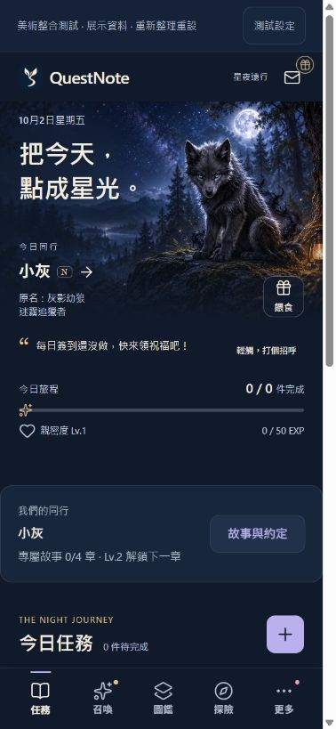
完整 App 首頁 · 真實灰狼場景與暱稱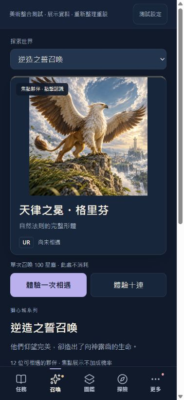
召喚 · 完整原名與操作同屏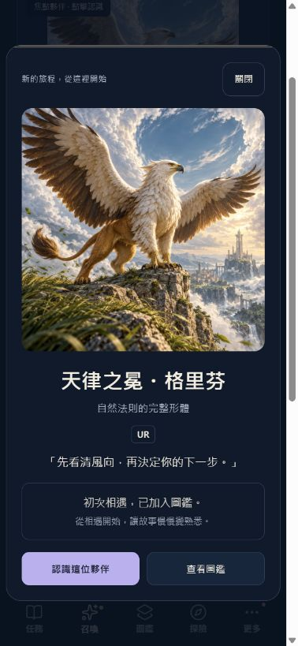
相遇結果 · 插畫、名字與既有招呼獨立 Prototype → 完整 App
保留第二版的相遇設計，接上 App 主導覽與首頁陪伴；這組圖不代表正式站版本。
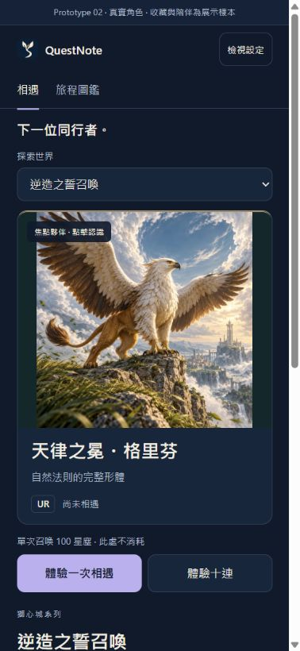
之前 · 獨立 Prototype 02現在 · 完整 App 召喚頁三套 Theme
星夜遠行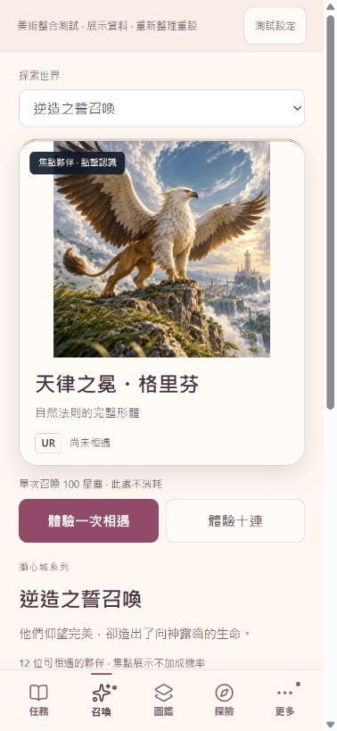
晨光花園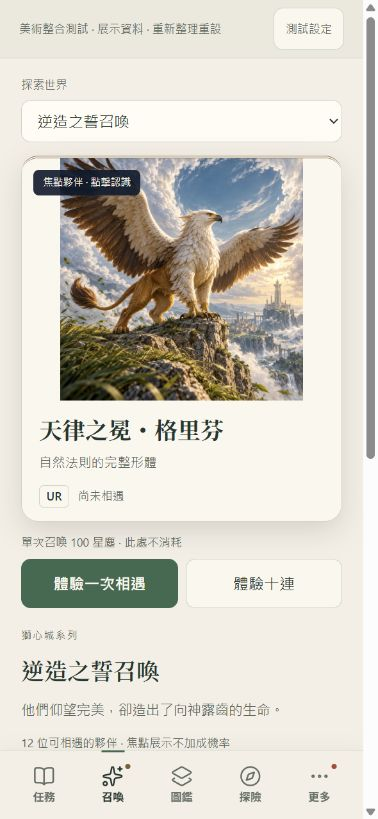
暮光冒險手帳 圖鑑、詳細頁與十連
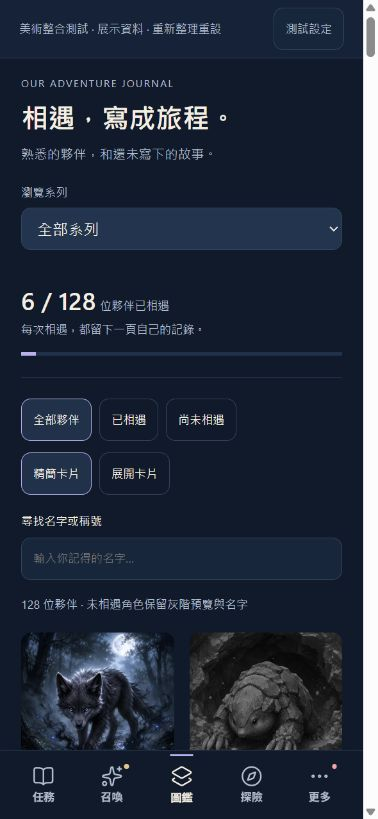
全部 128 位夥伴的圖鑑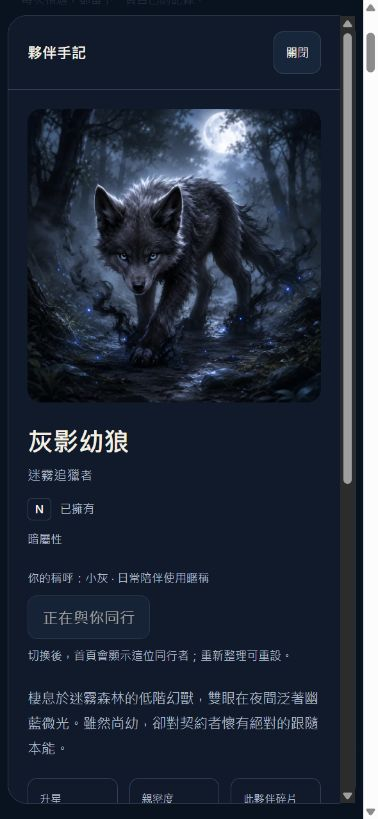
灰影幼狼 · 原名與你的稱呼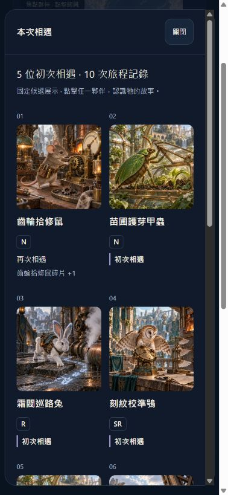
十連完整總覽 · 可開詳細頁切換陪伴與滿星
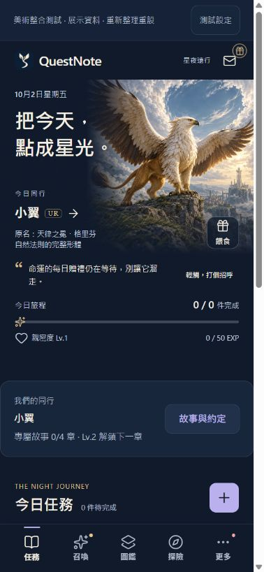
暱稱小翼 · 原名與首頁角色同步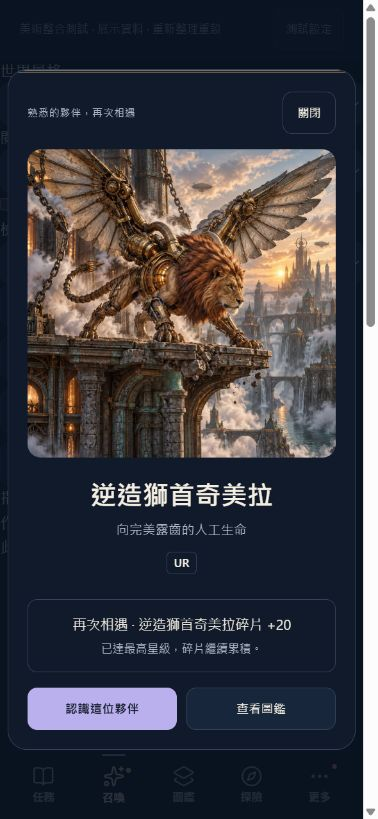
滿星再次相遇 · 真實 +20 碎片320px / 200% 字級
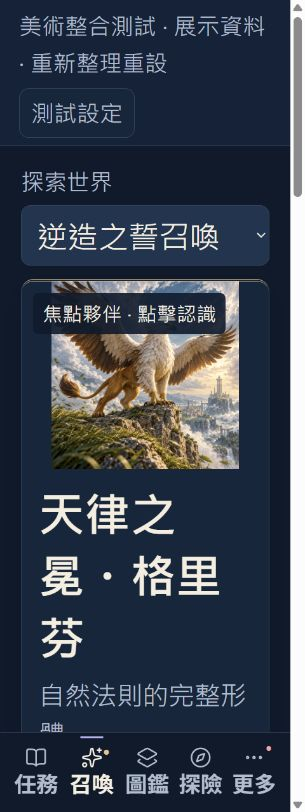
大字自然捲動 · default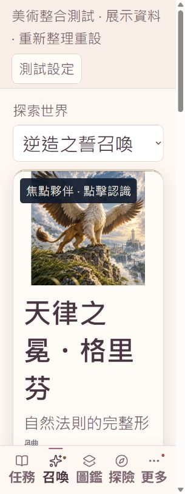
大字自然捲動 · sweet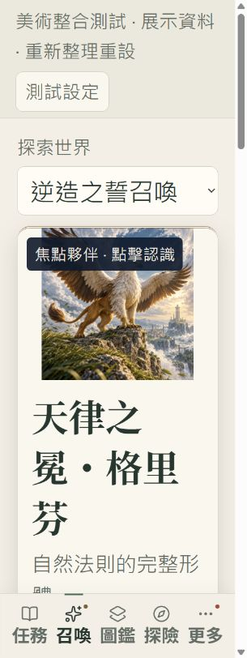
大字自然捲動 · twilightWindows 本機操作及相關測試通過；iPhone VoiceOver、原生字級、觸覺與 safe-area 仍待手機實機驗收。